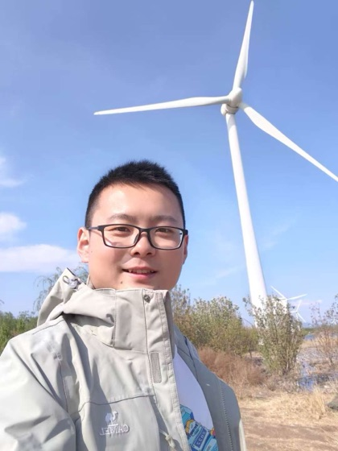

Jiafeng Xu
Previously Researcher, Tencent Robotics X
Robot manipulation·Legged locomotion·Reinforcement learning·Optimal control
About Me
I am currently a robotics researcher at ByteDance Seed-Robotics, where my research focuses on robotic reinforcement learning, learning-based robot manipulation and locomotion, and unified control frameworks for robots. Previously, I worked as a researcher at Tencent Robotics X, with research interests in robot motion control and planning, high-dynamic motion planning, and real-time dynamic parameter identification for robotic systems. I hold both a bachelor's and a master's degree from the Beijing Advanced Innovation Center for Intelligent Robots and Systems at Beijing Institute of Technology, where I was supervised by Professors Zhihong Jiang and Qiang Huang.
I am deeply passionate about robotics, with my career consistently centered on robot control and planning. During my tenure at Tencent, I concentrated on real-time control and planning grounded in dynamics and numerical optimization. At ByteDance, I have conducted in-depth research on end-to-end control methods for large-scale neural networks trained using supervised learning and reinforcement learning. My long-term ambition is to develop general-purpose embodied robots with human-like intelligence, enabling robots to seamlessly integrate into human production and daily life, and ultimately drive meaningful progress in human society.
Research Interests
- Robot Manipulation — long-horizon manipulation, dexterous manipulation, deformable manipulation.
- Robot Locomotion — optimal control, dynamics and model-based control, RL-based legged locomotion.
- System Identification — system modeling, online dynamic parameter identification, offline kinematics calibration.
- System Infrastructure — control systems and core algorithms, data collection and annotation systems, deployment optimization.
Contact me: if you are interested in collaborating or discussing any research question, feel free to drop me an email at chnjiafengxu@gmail.com.
News
- [2025/12] GR-RL: going dexterous and precise for long-horizon robotic manipulation is released.
- [2025/09] ByteWrist, a parallel robotic wrist for confined-space manipulation, is released.
- [2025/09] Manipulation as in Simulation is released.
- [2025/09] Flow-Based Policy for Online Reinforcement Learning is accepted to NeurIPS 2025.
- [2025/07] GR-3 technical report is released.
-
show more
- [2024/10] GR-2, a generative video-language-action model with web-scale knowledge, is released.
- [2024/09] WMP: world model-based perception for visual legged locomotion is released, with code open-sourced.
- [2023/12] GR-1 is released, with code open-sourced.
- [2023/10] MOMA-Force is presented at IROS 2023.
- [2022/05] Real-time inertial parameter identification of floating-base robots is presented at ICRA 2022.
Publications
For a full and up-to-date list, please see my Google Scholar. (*: equal contribution)
Technical Reports
Conference & Journal Papers
Projects
Awards & Honors
- [2019] Best Paper Finalist, IEEE International Conference on Advanced Robotics and Mechatronics (ICARM)
- [2018] Best Paper Finalist, IEEE International Conference on Intelligence and Safety for Robotics (ISR)